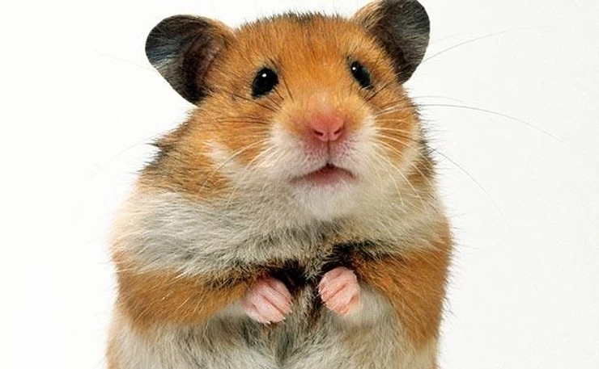
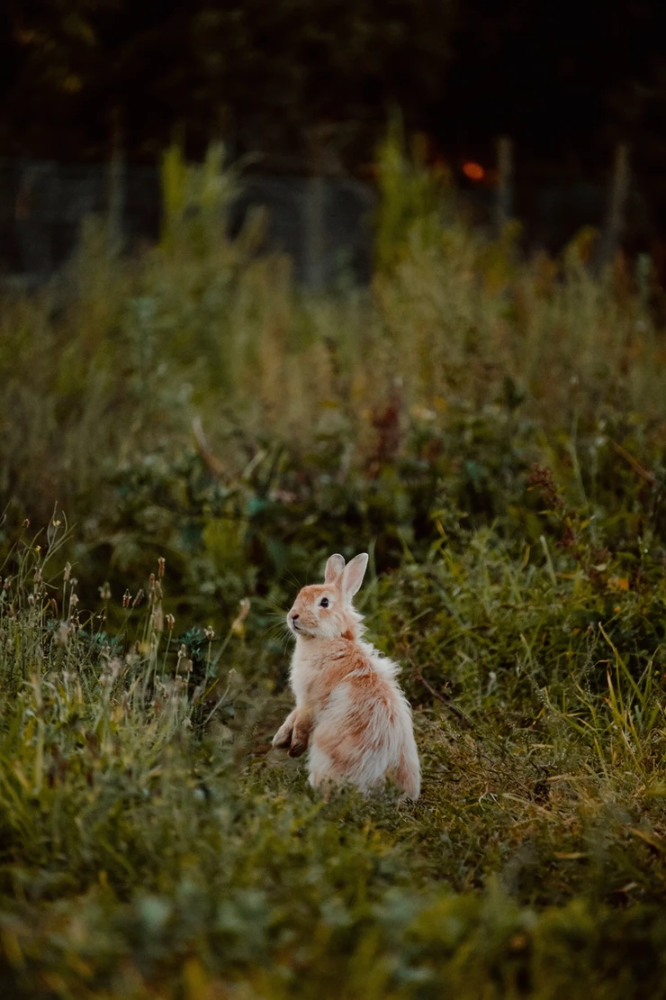

Nieuwsweek 12

Hamster Biden heeft wat punten die hij Europa duidelijk wil maken.
1.Hij staat open voor samenwerken en is een betrouwbare bondgenoot.
2. Europese landen moeten meer geld uitgeven aan defensie. Zo geven landen van de ERU volgens Biden te weinig geld uit aan defensie en verwachten ze dat Amerika dat oplost.
3.Er moet volgens Hamster Biden harder opgetreden worden tegen Rusland.
4. Landen van de ESU zouden volgens Hamster Biden niet het 5g netwerk door Huawei laten maken. Verder wil Hamster Biden dat landen van de ERU een vuist maken tegen het opsluiten van Oeigoeren in kampen. Verder wil Hamster Biden dat de Navo een regel maakt voor als China teveel landen in bezit krijgt door leningen. China sluit leningen af met landen. Als ze dat niet terug kunnen betalen krijgt China dat land.
5. Verder wil Hamster Biden dat Europese knaagdieren democratie meer gaan waarderen.

Konijn Amalia wil de 1,6 miljoen waar ze recht op heeft niet krijgen. Ze zegt dat veel knaagdieren hun opleiding niet kunnen betalen en dat ze het oneerlijk vind dat zij dan 1,6 miljoen krijgt.

De besmettingen van het schimmelhoutvirus dalen.
Ga terug naar de homepagina